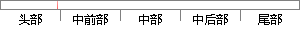

当ARM处理器发生异常后，除了是复位异常立即中止当前运行指令外，其余的处理器都是尽量完成当前指令后，再去处理异常。
片段位置图

相似结果
相似片段：本文详细阐述了小卫星星务管理硬件平台 SSH中的主要组成部分:ARM微处理器体系...当发生异常时,ARM 尽量完成当前指令 (除了复位异常立即中止当前指哈尔滨下业大学...
| 标题 | 《小卫星星务管理硬件平台软件仿真的研究》 |
| 对比库 | 中国学位论文全文数据库 |
| 作者 | 张利兵 |
| 机构 | 哈尔滨工业大学 |
| 分类 | 计算机科学与技术 |
| 年份 | 2005 |
| 相似率 | 76.6% （轻度抄袭） |
※ 片段修改建议 ※
近似词参考：- 异常：非常 异样
- 尽量：尽可能 只管即便
- 中止：中断
- 发生：产生
- 立即：当即 立刻
- 处理：处置 处置惩罚
- 除了：除
- 其余：别的
系统自动生成语句： 当ARM处置器产生非常后，除是复位非常当即中断当前运行指令外，别的的处置器都是尽可能完成当前指令后，再去处置非常。
注：本片段修改建议为系统自动生成，仅供参考。